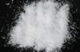

|
DOCUMENTATION_FORMAT: MINERAL
SAMPLE_ID: HS333.1B, HS333.2B, HS333.3B, HS333.4B
MINERAL_TYPE: Sulfate
MINERAL: Gypsum (Selenite)
FORMULA: CaSO4*2H20
FORMULA_HTML: CaSO4•2H20
COLLECTION_LOCALITY: Washington County, Utah
ORIGINAL_DONOR: Hunt and Salisbury Collection
CURRENT_SAMPLE_LOCATION: USGS Denver Spectroscopy Laboratory
ULTIMATE_SAMPLE_LOCATION: USGS Denver Spectroscopy Laboratory
SAMPLE_DESCRIPTION:
"This sample is colorless in hand specimen (colorless gypsum is called "selenite"), and is white when ground to fine particle size. It also appears to be quite pure, as its spectrum shows. As in the case of the previous sample, the near-infrared spectrum displays very prominent water bands beginning at 1µm and continuing out to 2.5µm."
Hunt, G.R., J.W. Salisbury, and C.J. Lenhoff, 1971, Visible and near-infrared spectra of minerals and rocks: IV. Sulphides and sulphates. Modern Geology, v. 3, p. 1-14.
Grain size fractions are indicated by the extension after the sample number:
.1B = <5 µm
.2B = <74 µm
.3B = 74-250 µm
.4B = 250-1200 µm
IMAGE_OF_SAMPLE:

END_SAMPLE_DESCRIPTION.
XRD_ANALYSIS:
Pure gypsum
Clark, R.N., King, T.V.V., Klejwa, M., Swayze, G.A., and Vergo, N., 1990, High spectral resolution reflectance spectroscopy of minerals: Journal of Geophysical Research, v. 95, no. 8B, p 12,653-12,680.
END_XRD_ANALYSIS.
COMPOSITIONAL_ANALYSIS_TYPE: None # XRF, EPMA, ICP(Trace), WChem
COMPOSITION_TRACE: None
COMPOSITION_DISCUSSION:
No compositional analyses.
END_COMPOSITION_DISCUSSION.
MICROSCOPIC_EXAMINATION:
Bimodal grain size distribution:
mode 1: 245 µm @ 98 vol%
mode 2: 30 µm @ 2 vol%
average gr sz = 242 µm
Sample appears to be pure. Biaxial with good cleavages and low relief. Larger grains are 15% coated with smaller grains. All this is consistent white pure gypsum. G. Swayze.
END_MICROSCOPIC_EXAMINATION.
SPECTROSCOPIC_DISCUSSION:
END_SPECTROSCOPIC_DISCUSSION.
SPECTRAL_PURITY: 1a2_3_4_ # Gypsum HS333.1B # 1= 0.2-3, 2= 1.5-6, 3= 6-25, 4= 20-150 microns
SPECTRAL_PURITY: 1a2_3_4_ # Gypsum HS333.2B # 1= 0.2-3, 2= 1.5-6, 3= 6-25, 4= 20-150 microns
SPECTRAL_PURITY: 1a2a3a4a # Gypsum HS333.3B # 1= 0.2-3, 2= 1.5-6, 3= 6-25, 4= 20-150 microns
SPECTRAL_PURITY: 1a2_3_4_ # Gypsum HS333.4B # 1= 0.2-3, 2= 1.5-6, 3= 6-25, 4= 20-150 microns
{kind=link}